Sancta é o lugar onde a pessoa entra para rezar, todos os dias. O símbolo é a porta de um santuário, com a cruz como a luz lá dentro. O arco nasce do "n" da Figtree Bold — mesma haste, mesma curva — por isso o símbolo mora dentro do próprio nome.
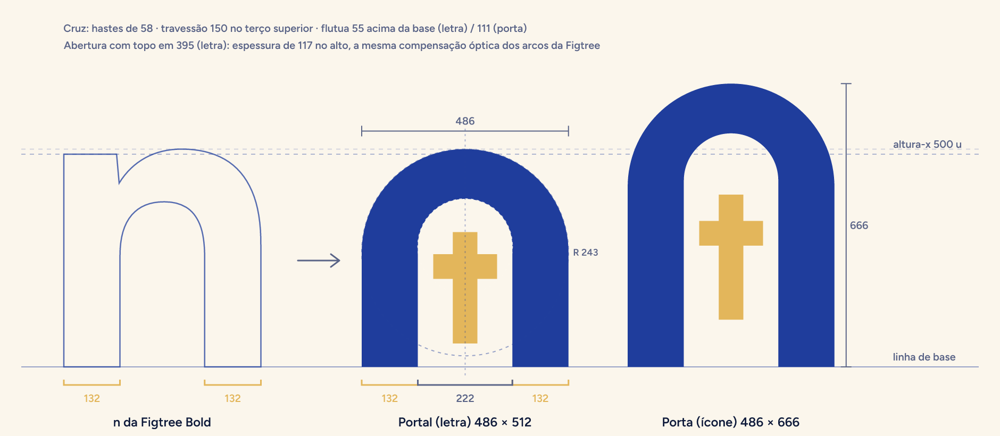
Portal na proporção da letra (486 × 512 unidades). Mono: arco e cruz na mesma cor.
portal-pergaminho.svgportal-azul.svgportal-mono-branco.svgportal-mono-tinta.svg"Sa" + Portal + "cta" em Figtree Bold convertida em curvas, com ajuste óptico de espaçamento. Área de proteção = altura do Portal.
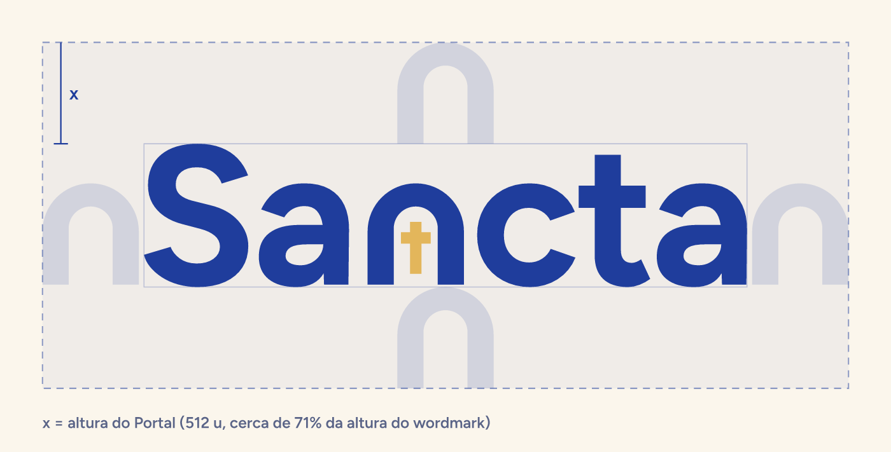
A mesma porta, em proporção vertical (486 × 666). Masters de 1024 px em quadrado cheio: a plataforma aplica a máscara.
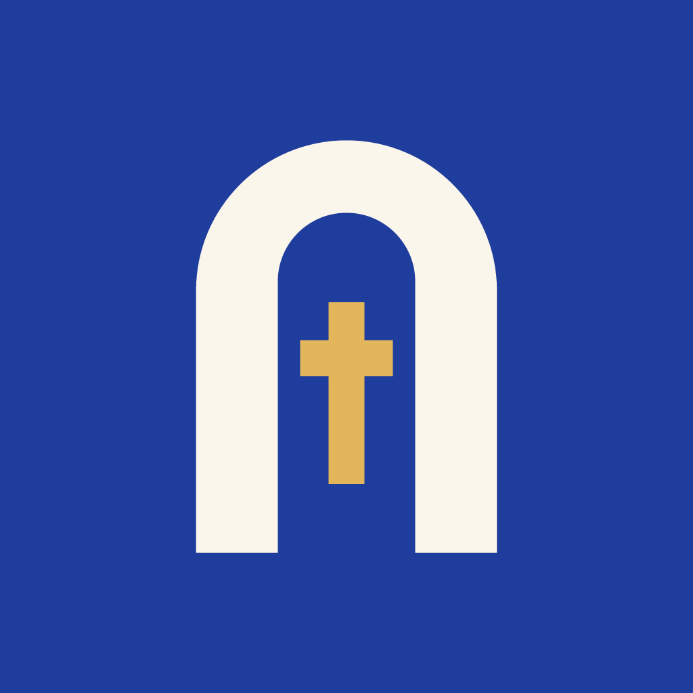
Padrão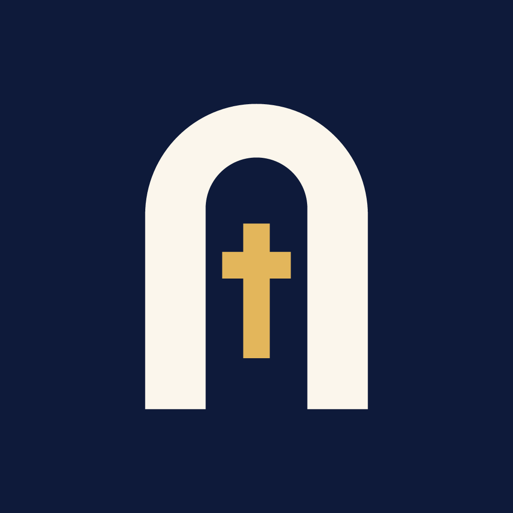
Escuro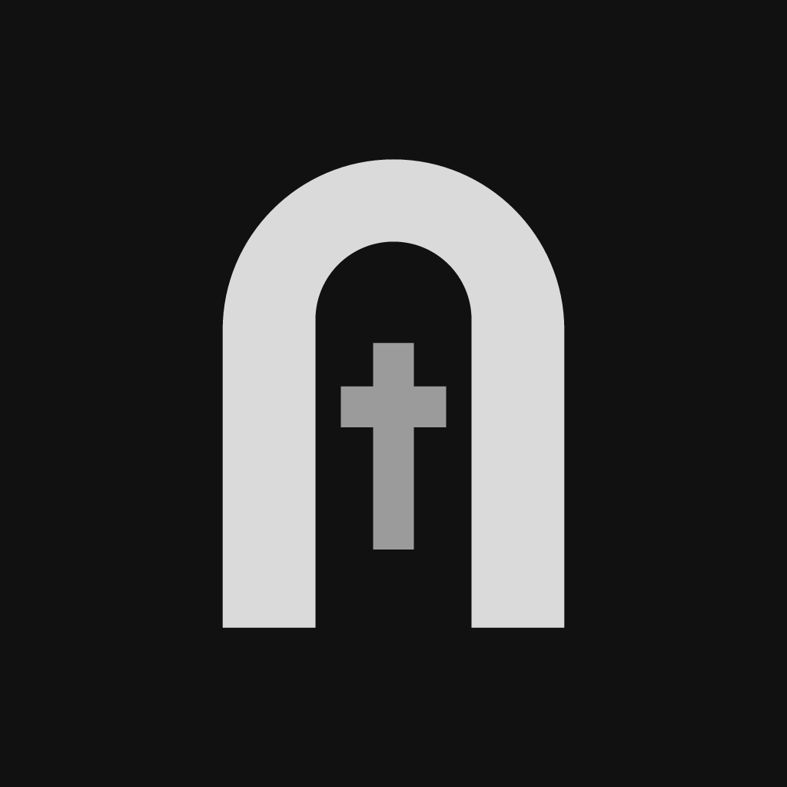
Tingido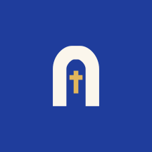
Adaptativo (círculo)Cinco tokens oficiais. Ouro só na cruz e em pequenos destaques.
Figtree (OFL), embutida no app e no site. EB Garamond como opção de leitura "Clássica".
Bom dia, Ana — Bold 700
Oração da manhã — SemiBold 600
Rezar agora · Para hoje · Amém — Medium 500
Ave Maria, cheia de graça, o Senhor é convosco. Bendita sois vós entre as mulheres e bendito é o fruto do vosso ventre, Jesus. — Regular 400
No princípio era o Verbo, e o Verbo estava junto de Deus. — EB Garamond (Clássica)
Capas padrão por horário: aurora (manhã), luz (meio do dia), entardecer e noite. Paisagem 3:2 e retrato 3:4.
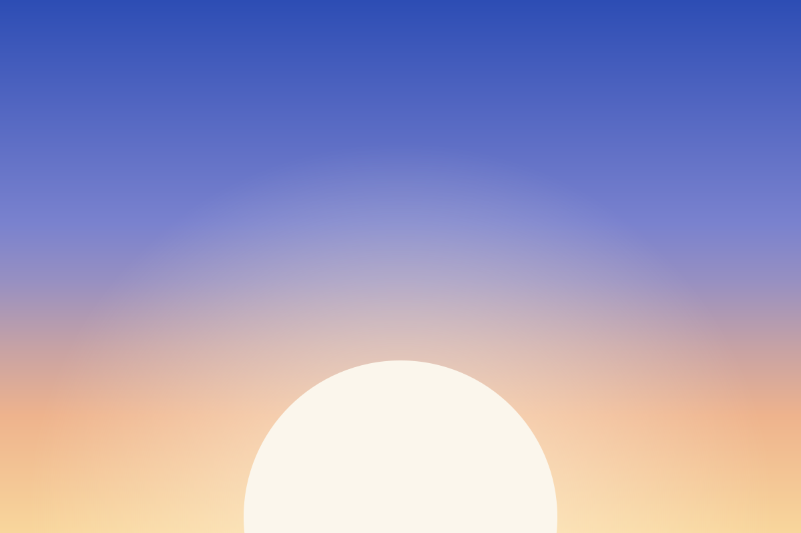
Aurora
Luz
Entardecer
Noite
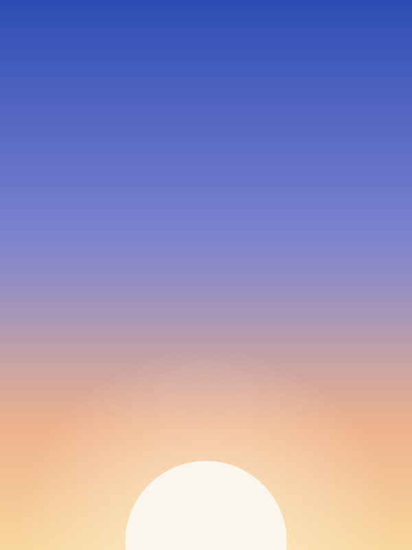
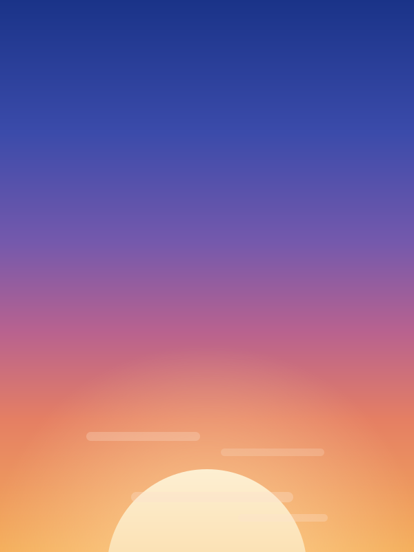
Uma cor só (o app tinge com a cor primária). PNG 256 px com os nomes de sempre + SVG.
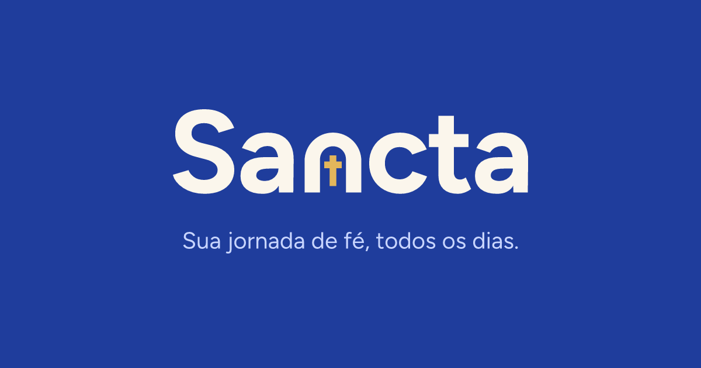
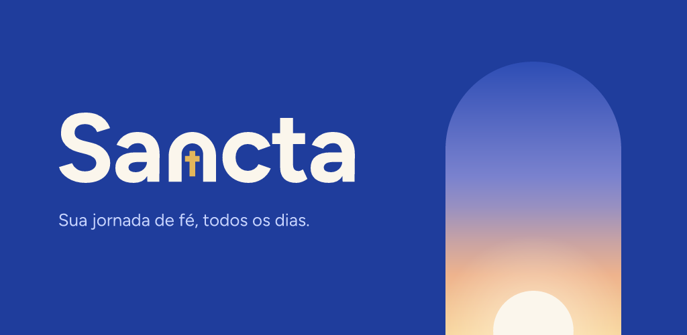
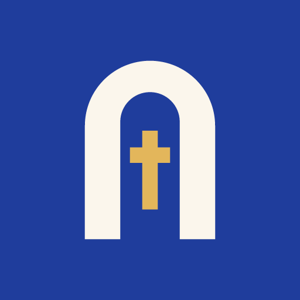
Ícone 512 × 512brand/symbol/ Portal (SVG + PNG 512)brand/logo/ wordmark, lockups com slogan, Sancta Gestãobrand/app-icon/ ícones padrão, escuro, tingido (1024)brand/illustrations/ céus em paisagem e retratobrand/icons/posturas/ posturas litúrgicasbrand/play-store/ ícone 512 e feature graphicbrand/social/ imagem de compartilhamentobrand/android/ prévias dos vetores Androidbrand/docs/ diagramas do manualbrand/source/ gerador (Node) de todos os assetsbackend/public/images/brand/ logos, favicons e ícones do sitebackend/public/fonts/ Figtree WOFF2 + figtree.cssapp/assets/brand/ SVGs usados pelo appapp/lib/core/brand/ primitivas FlutterManual completo: docs/design/MARCA.md.